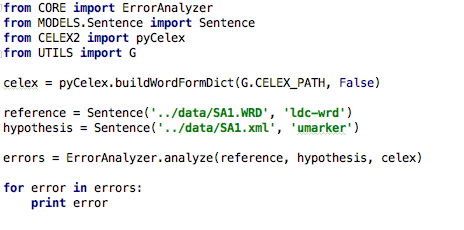

NAME
ErrorAnalyer - aligns two time-aligned sentences (sample1, sample2) and performs error analysis
DESCRIPTION
The program ErrorAnalyzer aligns two time aligned sentences (sample1, sample2) and performs analysis on the misaligned or mismatched data. The program looks to categorize the errors based on its property into one of the following types:
- OneToMany Substitution Error
- ManyToOne Substitution Error
- PhoneNeighbour OneToOne Substitution Error
- Inflectional OneToOne Substitution Error
- Derivational OneToOne Substitution Error
- Other OneToOne Substitution Error
- Insertion Error
- Deletion Error
- Chain Error
The time-alignment program looks at finding the best possible match of the word time frames. The error analyzer program then performs analysis on the error. For example: if the word is a OneToOne error, the analyzer performs morphological and phonological analysis on the words with the help of pyCelex, which is a basic wrapper (originally from: maxbane:pyClex) for the CELEX2 dataset.
The software was made for a research project in LatLab. The work is currently under progress.
Project Directory
Download the full project here.
SAMPLE EXECUTION

Input Sentences
Reference Text: she had your dark suit in greasy wash water all year
Hypothesis Text: she had your dark say in greasy was why are all year
Output
Reference: ( WORD: 927.0625 suit 1375.0 ) Hypothesis: ( WORD: 950 say 1290 ) Error Type: OTHERS
Reference: ( WORD: 1851.125 wash 2159.375 ) Hypothesis: ( WORD: 1870 was 2150 ) Error Type: PHONENEIGHBOUR
Reference: ( WORD: 2190.25 water 2422.5 ) Hypothesis: ( WORD: 2160 why 2320 ) ( WORD: 2330 are 2470 ) Error Type: ONETOMANY
BUGS/COMMENTS
Please contact Sushant Kafle at LatLab RIT with any bug reports or comments at the email address sxk5664@rit.edu. Thank you!